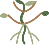

مراقبة الأقمار الصناعية
متابعة حالة الأراضي والمحاصيل من خلال صور وبيانات الاستشعار عن بُعد.
SATELLITE MONITORING
NILORANILORA منصة للزراعة الذكية والمستدامة، توظّف الذكاء الاصطناعي وبيانات الأقمار الصناعية لتحويل البيانات الزراعية إلى قرارات عملية.
في NILORA نؤمن أن مستقبل الزراعة يبدأ بفهم أفضل لما يحدث على الأرض.
نجمع بين بيانات الأقمار الصناعية والذكاء الاصطناعي والتحليلات الزراعية لمساعدة المزارعين والمهتمين بالقطاع الزراعي على متابعة الأراضي، وفهم التغيرات، واتخاذ قرارات أكثر وعيًا واستدامة.
أدوات ذكية تساعد على رؤية الصورة الكاملة للمزرعة والتصرف في الوقت المناسب.
متابعة حالة الأراضي والمحاصيل من خلال صور وبيانات الاستشعار عن بُعد.
SATELLITE MONITORINGقراءة المؤشرات المتاحة لفهم ظروف الأرض وكفاءة استخدام الموارد.
SOIL & WATER ANALYSISتحليلات مدعومة بالذكاء الاصطناعي للمساعدة في فهم حالة المحاصيل.
AI CROP INTELLIGENCEاقتراح خطوات عملية مبنية على البيانات لدعم القرارات الزراعية.
SMART RECOMMENDATIONSمساعدة المستخدمين على تنظيم دورات المحاصيل والتخطيط للمواسم.
CROP ROTATION PLANNERتنبيهات للمستجدات المهمة ومساعد NILORA AI للإجابة عن الاستفسارات.
SMART ALERTS · NILORA AIملاحظة: هذه مجموعة الحلول والخصائص المستهدفة ضمن رؤية المنصة، وقد تكون بعض الخصائص قيد التطوير وليست متاحة حاليًا.
تصوّر لتجربة رقمية تجمع المؤشرات والخرائط والتوصيات في واجهة واضحة تساعدك على الانتقال من الملاحظة إلى القرار.
To empower sustainable agriculture through AI-driven intelligence and satellite technology.
To make agricultural data accessible and actionable, helping farmers optimize resources, improve productivity, and build a more sustainable future.
تابع رحلة NILORA، وكن جزءًا من مجتمع يهتم بمستقبل الزراعة الذكية والمستدامة.
Brand identity & presentation ↗